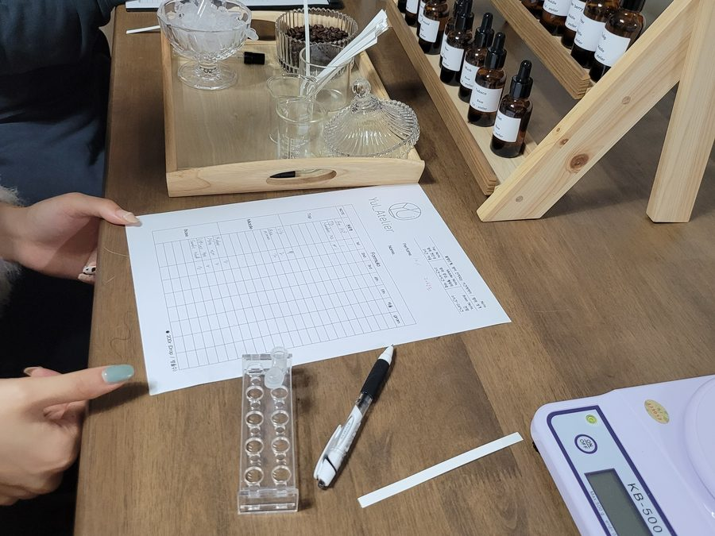
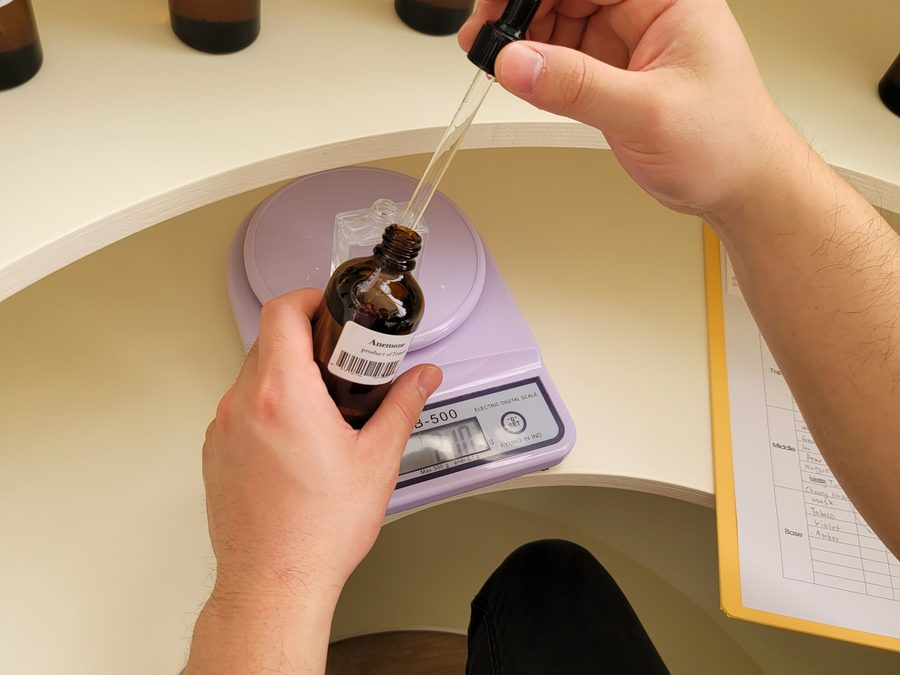
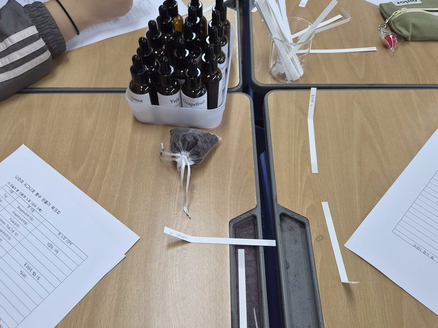
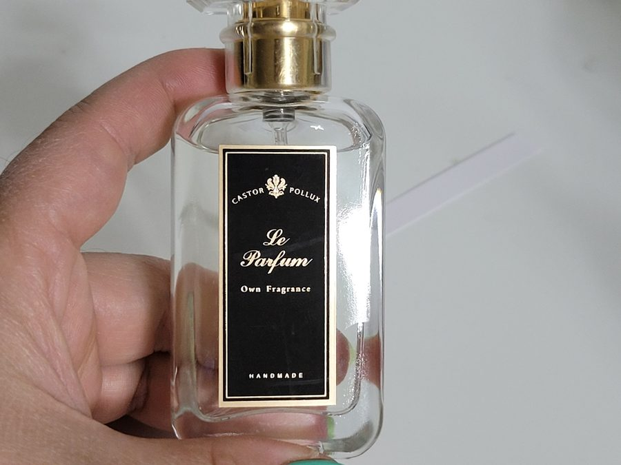
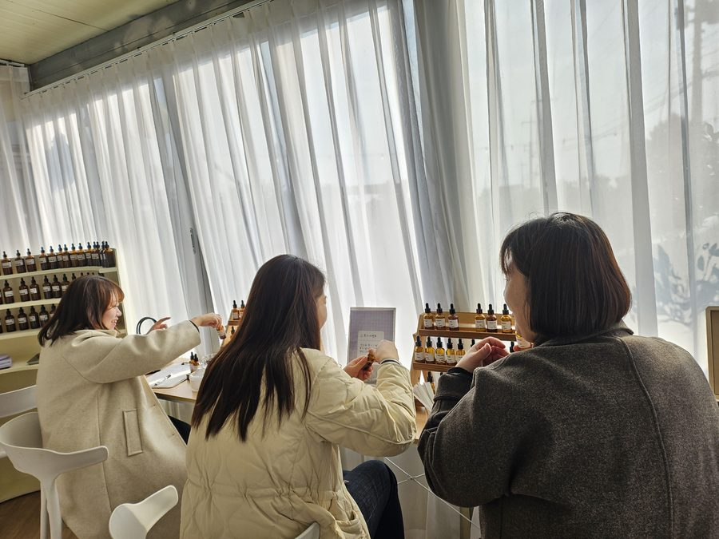
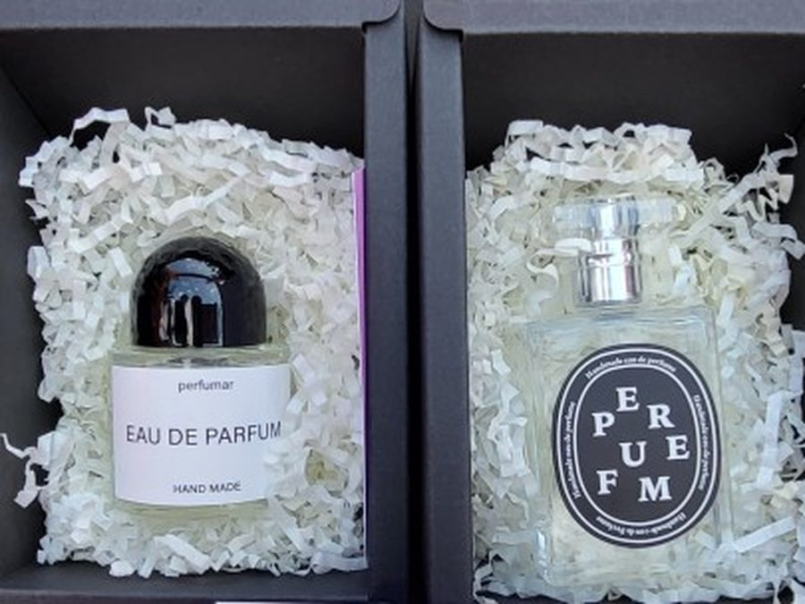

향은 설명이 필요 없습니다. 시향지를 코에 대는 순간, 몸이 먼저 반응합니다.
“이건 좋다”, “이건 별로다” — 그 판단에는 옳고 그름이 없어서 오랜만에 아무 눈치도 보지 않고 고르게 됩니다.
향을 고르고, 비율을 정하고, 섞는 20분 동안 머릿속이 조용해지는 걸 느끼실 겁니다. 그렇게 만든 한 병을 들고 돌아가시면 됩니다.
공방의 대표 수업
인원과 시간에 맞춰 골라 주세요 — 재료는 공방에서 챙겨 갑니다.
아래는 대표 구성입니다. 대상·계절·예산에 따라 조정해 제안드립니다.
| 프로그램 | 시간 | 결과물 | 추천 대상 · 운영 사례 |
|---|---|---|---|
| 나만의 시그니처 향수 | 60~120분 | 10~30ml 향수 1병 | 기업 워크숍 · 진로체험 한마음초(2025.4) · 서귀포장애인복지관(2023.4) |
| MBTI 향수 만들기 | 90~120분 | 30ml 향수 1병 | 팀빌딩 · 아이스브레이킹 서로의 성향을 향으로 나눕니다 |
| 아로마 롤온 만들기 | 60~90분 | 롤온 1개 | 가장 부담 없는 입문형 어르신 · 장애인 · 초보자 대상 1순위 |
| 인센스 · 왁스 타블렛 | 90분 | 타블렛 1~2개 | 공간 향 주제 인센스향 지도사(사범) 자격 보유 |
| 아로마 캔들 | 90~120분 | 캔들 1개 | 연말 · 기념일 자리 색과 향을 함께 고릅니다 |
소요 시간에는 사전 세팅(약 30분)과 뒷정리(약 20분)가 포함되어 있지 않습니다. 이 두 가지는 저희가 별도로 진행합니다.
말이 적은 참여자에게 특히 잘 맞습니다.
향은 코로 맡는 순간 바로 반응이 오기 때문에, 표현을 어려워하는 분이나 처음 만나는 사람들끼리도 이야기가 쉽게 시작됩니다. 기업 워크숍·팀빌딩에서 아이스브레이킹을 대체하는 용도로 많이 찾으십니다.
향은 코로 맡는 순간 바로 반응이 오기 때문에, 표현을 어려워하는 분이나 처음 만나는 사람들끼리도 이야기가 쉽게 시작됩니다. 기업 워크숍·팀빌딩에서 아이스브레이킹을 대체하는 용도로 많이 찾으십니다.
그날의 자리와 결과물
손끝에 남는 것들입니다.






한 번으로 끝나지 않는 수업도 합니다.
초등학교 돌봄교실에서 40주를 이어 진행한 연간 커리큘럼이 이미 짜여 있습니다. 기관 사정에 맞춰 10회 · 20회 · 40회로 조정해 드립니다. 연간 정기 출강 보기 →
초등학교 돌봄교실에서 40주를 이어 진행한 연간 커리큘럼이 이미 짜여 있습니다. 기관 사정에 맞춰 10회 · 20회 · 40회로 조정해 드립니다. 연간 정기 출강 보기 →